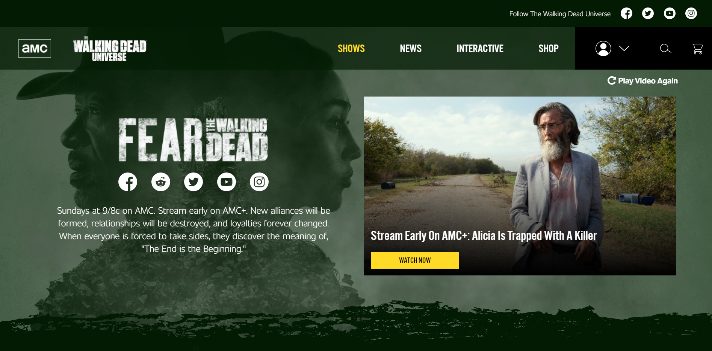

AMC WEBSITE USER INTERFACE SURVEY

The purpose of this survey is for our organization to get some insight on the perspective of our website's users. We would like to know our users' opinions of our website, amc.com/twdu, and it's user interface.
Please answer the following questions about your experience using the AMC website user interface.